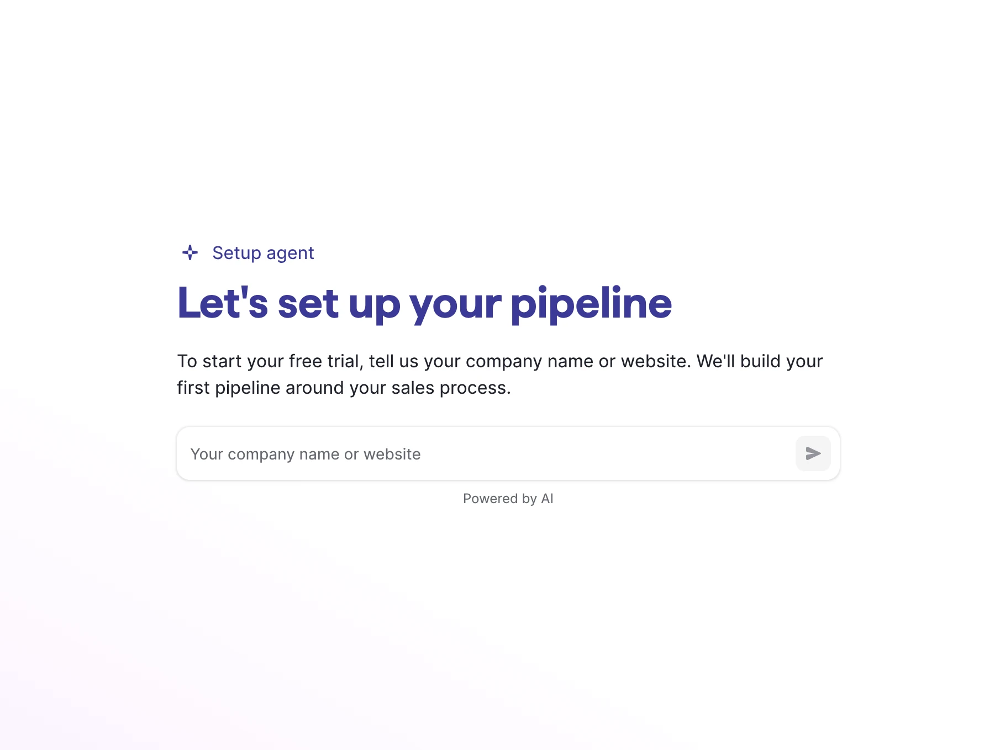
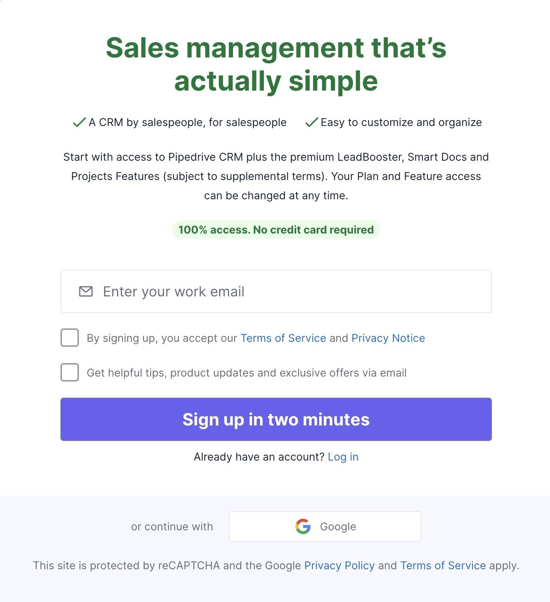
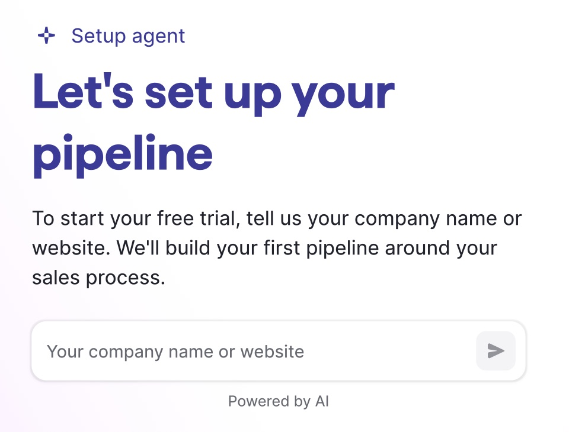

Agentic Onboarding
Showing value before asking for a signup.

- Experiment
- Agentic Onboarding A/B test
- Primary metric
- Trial‑to‑paid (T2P) conversion
- My role
- Drafted the end‑to‑end experience
- Status
- First run complete; re‑runs planned for October 2026
A CRM that proves itself before it asks for your email
Pipedrive normally asks people to sign up before they see the product. Agentic Onboarding flips that.
Our new Setup Agent turns a company name or domain into a working sales pipeline in minutes and lets the person try it on sample data. Only then does it ask them to create an account to keep it.
We asked for the relationship before the value
In the live product, signup comes first, before someone has done anything in a CRM. Only after creating an account do they land in the product itself, where popups and an optional setup guide try to explain what to do next.
- New users commit an email and password before they know if this CRM fits how they sell
- Understanding of core concepts (deals, pipeline, stages) is deferred until after signup
- Guidance relies on popups layered onto a real, sometimes empty, product
Before: the live flow
- Sign upEmail and password
- Land in an empty productNothing to react to yet
- Popups explain the UIGuidance layered on top
- Optional setup guideA separate page to find
Where the value moment moved


Before: live pipedrive.com signup → After: Agentic Onboarding entry
Framed as a fast, testable bet
Shipped as an A/B test, not a full re‑platform, and designed to be reversible.
Movement in trial‑to‑paid (T2P) conversion.
Kicked off with a focused sprint. I drafted the end‑to‑end experience for engineering to build against.
Does proving value before signup change who converts, and how many?
Who saw it
A share of new visitors starting a free trial was enrolled. Half of them saw the new Setup Agent flow, the other half the current signup. Mobile and other languages weren't included.
- New visitors only
- “Try it free” on web
- English (EN) locale
- Desktop only
Where the experiment starts and stops
The scope ends when the user submits the “About you” form. A real session is created and the browser redirects into live Pipedrive. Everything after that is the standard product, not this experiment.
Desktop only
No support yet for visitors signing up from a mobile browser.
3 attempts
After 3 tries at entering a company name or domain, the flow falls back to a generic pipeline.
15 attempts
Editing and rebuilding the sales process is capped at 15 tries.
Limited sample data
Opening, editing and deleting sample deals is limited to what the walkthrough covers.
No CRM import in this experiment. Testing suggested it was premature here, so it's being validated in a separate experiment.
Let people build something real before they commit
Guiding new users to personalise their pipeline and learn how to add a deal, move a deal and add an activity, while reducing the overwhelm of multiple inputs during signup, will lead to a magical first onboarding experience that helps them get started on Pipedrive.
Personal, not generic
The pipeline reflects their company, not a demo dataset.
Editable early
Every draft (industry, process, stages) can be corrected before moving on.
Signup deferred
Signup comes at the moment of ownership, not the moment of curiosity.
What the experience should always feel like
Positive momentum
Create positive emotional momentum from the very first interaction.
Fast & effortless
Make the experience feel fast, simple, and effortless.
Value, fast
Deliver real value as quickly as possible.
Trust like a bank account
Every interaction should add confidence, clarity and credibility, never take it away.
Personal & adaptable
Help customers shape the product around how they work, so it feels like their own.
Never one‑and‑done
Onboarding stays available, helping customers discover, improve and expand as new features launch.
Visual continuity
One coherent visual language, start to finish.
Feel magical
The experience should feel like more than the sum of its parts.
Why company name, not email, opens the flow
Email was the obvious default, since it's the standard SaaS signup pattern. We chose company name or website instead, after weighing both against who we're actually building for.
Email: considered, not chosen
- Doesn't reliably map to a company. Many of our smaller target customers sign up with personal addresses.
- Needs verification before it's usable, which adds a step and a wait
- Slower to type than a short company name
Company name / website: chosen
- Works for our actual target customers: smaller companies, not just ones with clean corporate domains
- Feeds the AI directly. It's exactly what the Setup Agent needs to identify the business and draft a sales process.
- Quick to type with no verification, so a result appears right away
We benchmarked how others handle the first five minutes
Before designing the flow, we looked at how direct CRM competitors and adjacent workflow tools handle the first five minutes: what they ask for, what they show before signup, and where they make people wait.
Attio
Direct competitor
HubSpot
Direct competitor
Salesforce
Direct competitor
Airtable
Adjacent, a flexible workspace tool
Why this matters: the scan shaped what “fast and simple” needed to mean here. It also confirmed that an AI‑personalised first step before signup wasn't yet common among direct competitors.
From a company name to a working pipeline in five steps
Instead of signing up first and then being guided through an empty product, the visitor shares one thing: their company. The Setup Agent does the setup work, the visitor learns by doing on their own pipeline, and the account comes last.
- Share companyThe visitor types a company name or website. No account, email or password is needed to start.
- Confirm & refineThe Setup Agent identifies the business, proposes an industry and drafts a sales process in plain language. Every part can be edited before anything is built.
- Pipeline is builtEach approved stage becomes a pipeline column, filled with sample deals so the board never looks empty on day one.
- Try core actionsInstead of a feature tour, three real tasks on the sample data: add a deal, move it forward and add an activity. It's the core loop every Pipedrive user repeats daily.
- Create accountOnly after the tour does the agent ask for an account, framed as keeping the pipeline they just built rather than starting something new.
Play with the prototype
Enter a company name or website and the Setup Agent drafts a sales process and builds a pipeline. It's a desktop prototype, so it works best on a larger screen.
Choices worth calling out
Personalised over generic
The pipeline reflects the user's real company and industry rather than a canned demo. Recognising their own business sells the value better than imagining it.
Reversible at every step
Company, industry and process can each be reopened and edited again without losing later progress. Here, trust matters more than speed.
Learn by doing, not reading
The tour replaces a feature checklist with three real actions on the user's own data, the same loop they'll repeat every day after.
Ask to keep, not to start
Framing signup as “save your work” turns loss aversion into motivation, instead of asking for blind trust up front.
First results are in
The first run didn't move the north star yet, but it confirmed the core idea: people who reach the Setup Agent build a pipeline and come back. The challenge is getting more visitors to that moment, which is what the re‑run tackles.
No significant change in the first run
The likely reason is reach: most visitors skipped before engaging with the Setup Agent, so too few experienced the new flow to move T2P. The re‑run targets exactly that, while the leading indicators below show the flow works for those who use it.
What's working
Sales process draft and pipeline generation are working
66% of visitors who entered a company name generated a pipeline, compared with 34% in past experiments.
Retention is the strongest signal so far
Day‑1 retention is 52.9% for people who generated a pipeline, compared with 39.5% for those who didn't.
What's not working
Skipping and creating an account
Most visitors never experience the agent's differentiating value. 43% click “Skip to create account”, and 56% of all skips happen before users engage with the Setup Agent.
Gathering company context from a name or domain
48.4% of users who entered their name or domain either got no results from the LLM or said “no, wrong company”, and eventually picked an industry from our list.
UX issues
- There's no upfront framing of what a “pipeline” or “stage” is. CRM literacy can't be assumed.
- The activities walkthrough is introduced abruptly, right after the pipeline and deal setup.
What's next: re‑run
Better framing when landing on the Setup Agent
- Set the expectation that generating a pipeline is the first step to creating an account.
- The Setup Agent asks about your business, customers and products or services to shape the sales process draft.
UX changes that set the right expectations
- Centre the Setup Agent to keep it in focus.
- Change “Skip and create account” to “I'll do this later”.
- Remove the “Activities” walkthrough step to keep the focus on the Setup Agent.
What testing told us
Positive signals
“I hate starting with a blank page.”
The AI‑drafted first version relieved blank‑page anxiety, which validated the core premise: the agent drafts first, not the user.
They connected the dots
Participants recognised that stage names and descriptions came from their company's domain, so the personalisation read as intentional, not random.
Negative signals
“A pipeline alone doesn't sell me.”
More experienced users wanted to see Pipedrive's broader capabilities, not just deal tracking. That's the signal behind the integrations idea in next steps.
Clarified the “Build” copy
Only 3 of 5 participants correctly guessed that the button would build their pipeline. The call to action wasn't clear enough.
Deprioritised “show me another”
Only 1 of 5 participants was interested in generating a new version, too few to prioritise it over direct editing.
Removed the colourful activity icons
Icons on deal cards drew attention and confused people. We removed them before introducing activities and now show the correct state for a new activity directly.
Moved import out of scope
Participants said they'd import only after deciding to pay, and import needs real engineering investment. It's now a separate, focused experiment.
What building this has already taught us
- Editability at every step turned out to be as important as the AI draft itself. Users needed an easy way back, not just forward.
- Filling the board with sample deals right away, instead of showing an empty state, helped the pipeline concept click faster in review.
How much personalisation is enough before it starts to feel like effort instead of magic?
Does deferring signup change who converts (better‑fit users), or just when they convert?
After the first run
Re‑run with better framing
V2 re‑runs with minimal changes to the “skip” button. V3 is a full re‑run with clearer framing on the Setup Agent and UX changes that set the right expectations, aiming to get more visitors to generate a pipeline.
Integrations & automations
Use signals from the sales‑process description to suggest connecting email, WhatsApp, calendar or other tools, and automating follow‑ups.
Import as a suggestion
Offer manual import once value is proven and watch traction before investing more, informed by a parallel import experiment.
Localise beyond EN
Bring the agent's UX content to other languages once the re‑runs validate the English flow.